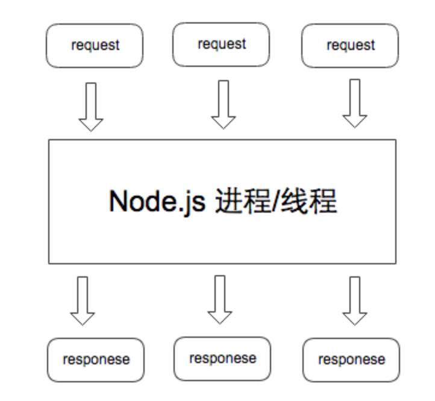

一 深入理解进程阻塞
进程间的通信时通过 send() 和 receive() 两种基本操作完成的。具体如何实现这两种基础操作，存在着不同的设计：
消息的传递有可能是阻塞的或非阻塞的，也被称为同步或异步的。----《操作系统概论》
- 阻塞式发送：blocking send，发送方进程会被一直阻塞，直到消息被接受方进程收到
- 非阻塞式发送：nonblocking send，发送方进程调用 send() 后，立即就可以其他操作
- 阻塞式接收：blocking receive，接收方调用 receive() 后一直阻塞，直到消息到达可用
- 非阻塞式接受：nonblocking receive，接收方调用 receive() 函数后，要么得到一个有效的结果，要么得到一个空值，即不会被阻塞。
上述不同类型的发送方式和不同类型的接收方式，可以自由组合，即从进程级通信的维度讨论时， 阻塞和同步（非阻塞和异步）就是一对同义词， 且需要针对发送方和接收方作区分对待。
概念解释：
- 中断（interrupt）：CPU 微处理器有一个中断信号位， 在每个CPU时钟周期的末尾, CPU会去检测那个中断信号位是否有中断信号到达， 如果有，则会根据中断优先级决定是否要暂停当前执行的指令， 转而去执行处理中断的指令。 （其实就是 CPU 层级的 while 轮询）
- 时钟中断( Clock Interrupt )：一个硬件时钟会每隔一段（很短）的时间就产生一个中断信号发送给 CPU，CPU 在响应这个中断时， 就会去执行操作系统内核的指令， 继而将 CPU 的控制权转移给了操作系统内核， 可以由操作系统内核决定下一个要被执行的指令。
- 系统调用（system call）：system call 是操作系统提供给应用程序的接口。 用户通过调用 system call 来完成那些需要操作系统内核进行的操作， 例如硬盘， 网络接口设备的读写等。
现代操作系统都是采用虚拟存储器。操心系统的核心是内核，独立于普通的应用程序，可以访问受保护的内存空间，也有访问底层硬件设备的所有权限。为了保证用户进程不能直接操作内核，保证内核的安全，操心系统将虚拟空间划分为两部分，一部分为内核空间，一部分为用户空间。
用户进程在从用户空间切换到内核空间，需要以下步骤：
- 1.当一个程序正在执行的过程中， 中断（interrupt） 或 系统调用（system call） 发生可以使得 CPU 的控制权会从当前进程转移到操作系统内核。
- 2.操作系统内核负责保存进程i在 CPU 中的上下文（程序计数器，寄存器）到 PCB$_i$（操作系统分配给进程的一个内存块）中
- 3.从PCB$_j$取出进程 j 的CPU 上下文， 将 CPU 控制权转移给进程 j ， 开始执行进程 j 的指令。
操作系统在进行进切换时，需要进行一系列的内存读写操作， 这带来了一定的开销：对于一个运行着 UNIX 系统的现代 PC 来说， 进程切换至少需要花费 300 us 的时间。我们所说的 “阻塞”是指进程在发起了一个系统调用（System Call） 后，由于该系统调用的操作不能立即完成，需要等待一段时间，于是内核将进程挂起为等待 （waiting）状态， 以确保它不会被调度执行， 占用 CPU 资源。
综上所述，阻塞和非阻塞描述的是进程的一个操作是否会使得进程转变为“等待”的状态，又因为阻塞这个词是与系统调用 System Call 紧紧联系在一起的， 因为要让一个进程进入 等待（waiting） 的状态，要么是它主动调用 wait() 或 sleep() 等挂起自己的操作，要么是它调用 System Call， 而 System Call 因为涉及到了 I/O 操作，不能立即完成，于是内核就会先将该进程置为等待状态，调度其他进程的运行，等到它所请求的 I/O 操作完成了以后，再将其状态更改回 ready 。
操作系统内核在执行 System Call 时， CPU 需要与 IO 设备完成一系列物理通信上的交互， 其实会再一次涉及到阻塞和非阻塞的问题， 例如， 操作系统发起了一个硬盘读的请求后， 其实是通过总线向硬盘设备发出了一个读请求，它即可以阻塞式地等待IO 设备的返回结果，也可以非阻塞式的继续其他的操作。 在现代计算机中，这些物理通信操作基本都是异步完成的， 即发出请求后， 等待 I/O 设备的中断信号后， 再来读取相应的设备缓冲区。 但是，大部分操作系统默认为用户级应用程序提供的都是阻塞式的系统调用 （blocking system call）接口， 因为阻塞式的调用，使得应用级代码的编写更容易（代码的执行顺序和编写顺序是一致的）。
但同样，现在的大部分操作系统也会提供非阻塞I/O 系统调用接口（Nonblocking I/O system call）。 一个非阻塞调用不会挂起调用程序， 而是会立即返回一个值，表示有多少bytes 的数据被成功读取（或写入）。
非阻塞I/O 系统调用( nonblocking system call )的另一个替代品是 异步I/O系统调用 （asychronous system call）。 与非阻塞 I/O 系统调用类似，asychronous system call 也是会立即返回， 不会等待 I/O 操作的完成， 应用程序可以继续执行其他的操作， 等到 I/O 操作完成了以后，操作系统会通知调用进程（设置一个用户空间特殊的变量值 或者 触发一个 signal 或者 产生一个软中断 或者 调用应用程序的回调函数）。
非阻塞I/O 系统调用( nonblocking system call ) 和 异步I/O系统调用 （asychronous system call）的区别是：
- 一个非阻塞I/O 系统调用 read() 操作立即返回的是任何可以立即拿到的数据， 可以是完整的结果， 也可以是不完整的结果， 还可以是一个空值。
- 异步I/O系统调用 read（）结果必须是完整的，但是这个操作完成的通知可以延迟到将来的一个时间点。
总结：
- 阻塞/非阻塞， 同步/异步的概念要注意讨论的上下文
- 在进程通信层面， 阻塞/非阻塞， 同步/异步基本是同义词， 但是需要注意区分讨论的对象是发送方还是接收方，发送方阻塞/非阻塞（同步/异步）和接收方的阻塞/非阻塞（同步/异步） 是互不影响的。
- 在 IO 系统调用层面（ IO system call ）层面， 非阻塞IO 系统调用 和 异步IO 系统调用存在着一定的差别， 它们都不会阻塞进程， 但是返回结果的方式和内容有所差别， 但是都属于非阻塞系统调用（ non-blocing system call ）
- 阻塞系统调用（non-blocking I/O system call 与 asynchronous I/O system call） 的存在可以用来实现线程级别的 I/O 并发， 与通过多进程实现的 I/O 并发相比可以减少内存消耗以及进程切换的开销。
二 I/O模型总结
2.0 I/O模型汇总
Unix网络编程中，可以利用的IO模型有5种：
- 阻塞IO
- 非阻塞IO
- 多路复用IO
- 信号驱动IO
- 异步IO
2.1 阻塞I/O模型
阻塞I/O是最传统的一种IO模型，即在读写数据过程中会发生阻塞现象。当用户线程发出IO请求之后，内核会去查看数据是否就绪，如果没有就绪就会等待数据就绪，而用户线程就会处于阻塞状态，用户线程交出CPU。当数据就绪之后，内核会将数据拷贝到用户线程，并返回结果给用户线程，用户线程才解除block状态。
典型的阻塞IO模型的例子为：
data = socket.read();
如果数据没有就绪，就会一直阻塞在read()方法。
2.2 非阻塞IO模型
当用户线程发起一个read操作后，并不需要等待，而是马上就得到了一个结果。如果结果是一个error时，它就知道数据还没有准备好，于是它可以再次发送read操作。一旦内核中的数据准备好了，并且又再次收到了用户线程的请求，那么它马上就将数据拷贝到了用户线程，然后返回。
所以事实上，在非阻塞IO模型中，用户线程需要不断地询问内核数据是否就绪，也就说非阻塞IO不会交出CPU，而会一直占用CPU，典型的非阻塞IO模型一般如下：
while(true){
data = socket.read();
if(data!= error){
// 处理数据
break;
}
}
但是对于非阻塞IO就有一个非常严重的问题，在while循环中需要不断地去询问内核数据是否就绪，这样会导致CPU占用率非常高，因此一般情况下很少使用while循环这种方式来读取数据。
2.3 多路复用IO模型
多路复用IO模型是目前使用得比较多的模型，如Java的NIO。在多路复用IO模型中，会有一个线程不断去轮询多个socket的状态，只有当socket真正有读写事件时，才真正调用实际的IO读写操作。因为在多路复用IO模型中，只需要使用一个线程就可以管理多个socket，系统不需要建立新的进程或者线程，也不必维护这些线程和进程，并且只有在真正有socket读写事件进行时，才会使用IO资源，所以它大大减少了资源占用。
在Java NIO中，是通过selector.select()去查询每个通道是否有到达事件，如果没有事件，则一直阻塞在那里，因此这种方式会导致用户线程的阻塞。
采用 多线程+ 阻塞IO 也能达到类似的效果，但是此时每个socket对应一个线程，这样会造成很大的资源占用，并且尤其是对于长连接来说，线程的资源一直不会释放，如果后面陆续有很多连接的话，就会造成性能上的瓶颈。而多路复用IO模式，通过一个线程就可以管理多个socket，只有当socket真正有读写事件发生才会占用资源来进行实际的读写操作。因此，多路复用IO比较适合连接数比较多的情况。
另外多路复用IO为何比非阻塞IO模型的效率高是因为在非阻塞IO中，不断地询问socket状态是通过用户线程去进行的，而在多路复用IO中，轮询每个socket状态是内核在进行的，这个效率要比用户线程要高的多。
不过要注意的是，多路复用IO模型是通过轮询的方式来检测是否有事件到达，并且对到达的事件逐一进行响应。因此对于多路复用IO模型来说，一旦事件响应体很大，那么就会导致后续的事件迟迟得不到处理，并且会影响新的事件轮询。
2.4 信号驱动I/O模型
在信号驱动IO模型中，当用户线程发起一个IO请求操作，会给对应的socket注册一个信号函数，然后用户线程会继续执行，当内核数据就绪时会发送一个信号给用户线程，用户线程接收到信号之后，便在信号函数中调用IO读写操作来进行实际的IO请求操作。
2.5 异步IO模型
异步IO模型是最理想的IO模型：当用户线程发起read操作之后，立刻就可以开始去做其它的事。而另一方面，从内核的角度，当它收到一个asynchronous read之后，它会立刻返回，说明read请求已经成功发起了，因此不会对用户线程产生任何block。然后，内核会等待数据准备完成，接着将数据拷贝到用户线程，当这一切都完成之后，内核会给用户线程发送一个信号，告诉它read操作完成了。在此过程中用户线程完全不需要知道实际的整个IO操作是如何进行的，只需要先发起一个请求，当接收内核返回的成功信号时表示IO操作已经完成，可以直接去使用数据了。
在异步IO模型中，IO操作的两个阶段都不会阻塞用户线程，这两个阶段都是由内核自动完成，然后发送一个信号告知用户线程操作已完成。用户线程中不需要再次调用IO函数进行具体的读写。这点是和信号驱动模型有所不同的，在信号驱动模型中，当用户线程接收到信号表示数据已经就绪，然后需要用户线程调用IO函数进行实际的读写操作；而在异步IO模型中，收到信号表示IO操作已经完成，不需要再在用户线程中调用iO函数进行实际的读写操作。
异步IO是需要操作系统的底层支持，在Java 7中，提供了Asynchronous IO。也只有异步IO才真正的异步IO，其他的IO模型都是同步IO，因为无论是多路复用IO还是信号驱动模型，IO操作的第2个阶段都会引起用户线程阻塞，也就是内核进行数据拷贝的过程都会让用户线程阻塞。
二 高性能I/O设计模式
2.1 多进程
每到达一个请求，我们为这个请求新创建一个进程来处理。这样，一个进程在等待 IO 时，其他的进程可以被调度执行，更加充分地利用 CPU 等资源。但是每新创建一个进程都会消耗一定的内存空间，且进程切换也有时间消耗，高并发时，大量进程来回切换的时间开销会变得明显起来。
2.2 多线程模式
在传统的网络服务设计模式中，有两种比较经典的模式：一种是 多线程，一种是线程池。
对于多线程模式，也就说来了client，服务器就会新建一个线程来处理该client的读写事件，如下图所示：

这种模式虽然处理起来简单方便，但是由于服务器为每个client的连接都采用一个线程去处理，使得资源占用非常大。因此，当连接数量达到上限时，再有用户请求连接，直接会导致资源瓶颈，严重的可能会直接导致服务器崩溃。
2.3 线程池模式
为了解决这种一个线程对应一个客户端模式带来的问题，提出了采用线程池的方式，也就说创建一个固定大小的线程池，来一个客户端，就从线程池取一个空闲线程来处理，当客户端处理完读写操作之后，就交出对线程的占用。因此这样就避免为每一个客户端都要创建线程带来的资源浪费，使得线程可以重用。
2.4 Reactor模式
在Reactor模式中，会先对每个client注册感兴趣的事件，然后有一个线程专门去轮询每个client是否有事件发生，当有事件发生时，便顺序处理每个事件，当所有事件处理完之后，便再转去继续轮询，如下图所示：

从这里可以看出，上面的五种IO模型中的多路复用IO就是采用Reactor模式。注意，上面的图中展示的 是顺序处理每个事件，当然为了提高事件处理速度，可以通过多线程或者线程池的方式来处理事件。
2.5 Proactor模式
在Proactor模式中，当检测到有事件发生时，会新起一个异步操作，然后交由内核线程去处理，当内核线程完成IO操作之后，发送一个通知告知操作已完成，可以得知，异步IO模型采用的就是Proactor模式。
三 杰出代表Node.js
Node.js是在v8引擎基础上开发的javascript运行时，为javascript提供了模块化、文件IO、Socket编程等支持。其架构如图所示：

他们分别是：
- Node.js 标准库，这部分是由 Javascript编写的，即我们使用过程中直接能调用的 API。在源码中的 lib 目录下可以看到。
- Node bindings，这一层是 Javascript与底层 C/C++ 能够沟通的关键，前者通过 bindings 调用后者，相互交换数据。实现在 node.cc
- 这一层是支撑 Node.js 运行的关键，由 C/C++ 实现。
- V8：Google 推出的 Javascript VM，也是 Node.js 为什么使用的是 Javascript的关键，它为 Javascript提供了在非浏览器端运行的环境，它的高效是 Node.js 之所以高效的原因之一。
- Libuv：它为 Node.js 提供了跨平台，线程池，事件池，异步 I/O 等能力，是 Node.js 如此强大的关键。
- C-ares：提供了异步处理 DNS 相关的能力。
- http_parser、OpenSSL、zlib 等：提供包括 http 解析、SSL、数据压缩等其他的能力。
一个基础的node http web server：
const http = require('http');
http.createServer((req, res) => {
res.writeHeader(200, {"Content-Type" : "text/plain"});
res.write("Hello world!");
res.end();
}).listen(9000);
Node.js的http模型：

Node中的事件驱动：Event Loop is a programming construct that waits for and dispatches events or messages in a program
- 1、每个Node.js进程只有一个主线程在执行程序代码，形成一个执行栈（execution context stack)。
- 2、主线程之外，还维护了一个"事件队列"（Event queue）。当用户的网络请求或者其它的异步操作到来时，node都会把它放到Event Queue之中，此时并不会立即执行它，代码也不会被阻塞，继续往下走，直到主线程代码执行完毕。
- 3、主线程代码执行完毕完成后，然后通过Event Loop，也就是事件循环机制，开始到Event Queue的开头取出第一个事件，从线程池中分配一个线程去执行这个事件，接下来继续取出第二个事件，再从线程池中分配一个线程去执行，然后第三个，第四个。主线程不断的检查事件队列中是否有未执行的事件，直到事件队列中所有事件都执行完了，此后每当有新的事件加入到事件队列中，都会通知主线程按顺序取出交EventLoop处理。当有事件执行完毕后，会通知主线程，主线程执行回调，线程归还给线程池。
- 4、主线程不断重复上面的第三步。